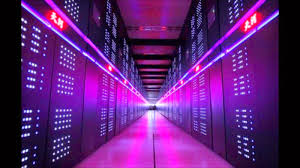
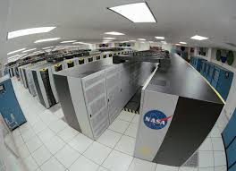
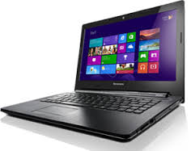

Startseite
Ein Personal Computer (engl. „persönlicher Rechner“ oder „privater Rechner“, kurz auch PC) ist ein Mikrocomputer,
der im Gegensatz zu einem Minicomputer oder Großrechner von nur einem einzigen Benutzer persönlich bedient und
genutzt wird. Das Spektrum reicht vom Bereich des Heimcomputers bis hin zum typischen Arbeitsplatzcomputer.
Überdurchschnittlich leistungsfähige PCs für rechen- und speicherintensive Anwendungen werden auch als Workstation
bezeichnet; ihr Preis kann ein Vielfaches eines Durchschnitts-PCs betragen.
Obwohl bereits in den 1970er Jahren üblich, wurde der Begriff Personal Computer, vor allem dessen Kurzform PC,
ab 1981 im Sprachgebrauch zunehmend und exklusiv mit dem IBM-PC und dessen kompatiblen Nachbauten verknüpft, was
nicht zuletzt deren Marktdominanz geschuldet war. Diese Verknüpfung gilt jedoch als überholt.


